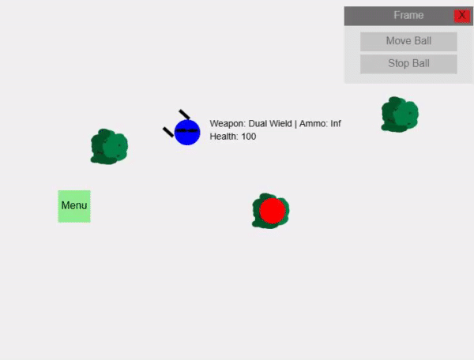

Welcome to the game! You can play in different modes, first you will need to click "Start Game", select the mode, and now you can play. (tutorial highly recommended)
As of now there are 6 main modes: 5 Wave, Normal Mode, Hard Mode, Endless, Sandbox, and the tutorial. Note: after completing 5 Wave mode, you will need to restart in order to play again.
Use the WASD keys to move the ball. Click the "Menu" button to open the menu and control the ball.
There will be a shop where you can buy new weapons and items. Everything is for free except for the Crown, which you can obtain by getting $10 from 1 enemy
The "frames" will be draggable through holding the topbar and dragging it around.
In settings, you can toggle dark mode for the background, as well as walls that bullets can interact with. Note: you can toggle sound, but the only sound effect as of now is when you cannot afford to buy the crown in the shop
More notes: beware that there will be ALOT of ui clutter if you do not exit certain frames.
Press 'F' to shoot a yellow ball from the center of the player ball.
Press 'G' to melee attack.
Hold 'Shift' to sprint.
Press 'Ctrl' to dash.
Press 'M' to open the menu and 'N' to open the shop.
Press 'H' to toggle enemy health bars.
Press 'Esc' or 'P' to pause the game or resume.
I will be working on this game through multiple weeks probably, so this wont be a full game yet. (As of week 3, there is now a wavegamemode)
Note: some features may be hidden, due to it not being fully implemented/ready for use.

Weapons: Pistol, Shotgun, Sniper, Dual Wield, Explosive Sniper, Katana, Nodachi, Dragon Slayer
Items: Heal, Rock, Speed Boost, Mine
Armor: Leather Armor, Iron Armor, Gold Armor, Cool Armor
Accessories: Crown, Glasses, Monocle, Top hat
Made by jimuv
My GitHub